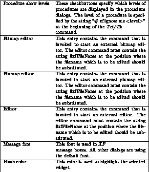
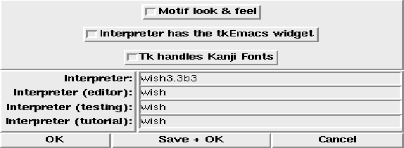

This dialog box provides access to the interpreter settings that are used by XF .

Figure: The procedure XFProcOptionsInterpreter
The single options have the following meanings (some option names may be abbreviated):
Option name & Purpose
